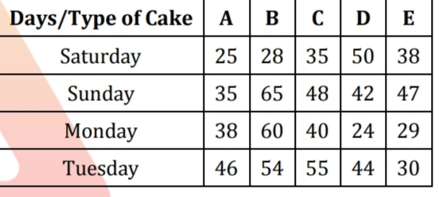
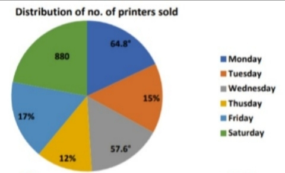

दिशानिर्देश (36-40): के स्थान पर क्या आएगा निम्नलिखित संख्या शृंखला में प्रश्न (?)चिह्न लगाइये। 200, 193, 179, 158, ?, 95 A) 135 B) 133 C) 132 D) 130 E) 128 .
यदि धारा के प्रतिकूल और धारा के अनुकूल गति का योग 36 किमी/घंटा है और धारा की गति 3 किमी/घंटा है। तो नीचे की ओर 52.5 किमी की दूरी तय करने में लगने वाला समय ज्ञात कीजिये? A) 2 hr B) 2.5 hr C) 3 hr D) 3.5 hr E) 4hr .
साधारण ब्याज दर पर एक राशि पाँच वर्षों में स्वयं की 1.6 गुना हो जाती है। प्रति वर्ष ब्याज दर ज्ञात कीजिये? A) 10% B) 12.5% C) 15% D) 12% E) 8.5% .
दिशा-निर्देश (43-52): दिए गए निम्नलिखित प्रश्नों में 'x' के सटीक मान की गणना करें। x^2 + (9^2 + 34) ÷ 5 = 39 A) 5 B) 4 C) 8 D) 6 E) 9 .
दिशा-निर्देश (43-52): दिए गए निम्नलिखित प्रश्नों में 'x' के सटीक मान की गणना करें। ? 6 × 16 × 5 ÷ 3 − x^2 = 96 A) 6 B) 7 C) 8 D) 9 E) 5 .
दिशा-निर्देश (43-52): दिए गए निम्नलिखित प्रश्नों में 'x' के सटीक मान की गणना करें। ? √(124 + x + 169) = 18 A) 27 B) 28 C) 29 D) 30 E)31 .
दिशा-निर्देश (43-52): दिए गए निम्नलिखित प्रश्नों में 'x' के सटीक मान की गणना करें। ? 28^2 − x^3 = 7^3 + 225 A) 6 B) 8 C) 4 D) 7 E)5 .
दिशा-निर्देश (43-52): दिए गए निम्नलिखित प्रश्नों में 'x' के सटीक मान की गणना करें। ? 298 − 13^2 − 2^3 = x × 11 A) 51 B) 41 C) 21 D) 11 E) 31 .
दिशा-निर्देश (43-52): दिए गए निम्नलिखित प्रश्नों में 'x' के सटीक मान की गणना करें। ? ^3√729 + 3(3/5) ÷ x = √(16 × 9) A) 1 B) 1.4 C) 1.2 D) 1.6 E) 2 .
दिशा-निर्देश (43-52): दिए गए निम्नलिखित प्रश्नों में 'x' के सटीक मान की गणना करें। x% of 300 + √256 = 243 ÷ 3 + 7 A) 18 B) 28 C) 24 D) 16 E) 32 .
दिशा-निर्देश (43-52): दिए गए निम्नलिखित प्रश्नों में 'x' के सटीक मान की गणना करें। x × 3 ÷ 8 = ^3√512 × √122 A) 256 B) 512 C) 64 D) 128 E) 320 .
दिशा-निर्देश (43-52): दिए गए निम्नलिखित प्रश्नों में 'x' के सटीक मान की गणना करें। 136 ÷ 2² × x = 17% of 500 ÷ 10 A) 1 B) 0.5 C) 0.25 D) 0.125 E) 1.25 .
दिशा-निर्देश (43-52): दिए गए निम्नलिखित प्रश्नों में 'x' के सटीक मान की गणना करें। 1836÷ x ÷ 9 =12 A) 9 B) 11 C) 13 D) 15 E) 17 .
दो व्यक्तियों A और B की वर्तमान आयु का अनुपात 3:2 है और चार वर्ष बाद उनकी आयु का अनुपात (B:A) 7:10 हो जाता है। तो B की वर्तमान आयु ज्ञात कीजिये? A) 20 years B) 18 years C) 24 years D) 36 years E) 30 years .
वृत्त A की परिधि और व्यास के बीच का अंतर 90 सेमी है। यदि वृत्त B की त्रिज्या वृत्त A से 7 सेमी कम है तो वृत्त B का क्षेत्रफल ज्ञात कीजिए?। A) 556 cm2 B) 616 cm2 C) 588 cm2 D) 532 cm2 E) 630 cm2 .
एक कक्षा में 40 बच्चे हैं जिनमें लड़कों की संख्या लड़कियों से 4 अधिक है। सभी छात्रों का औसत वजन 42.5 किलोग्राम है और सभी लड़कियों का औसत वजन 48 किलोग्राम है तो सभी लड़कों का औसत वजन ज्ञात करे। A) 39.5 kg B)38 kg C) 40.5 kg D) 36.75 kg E) 40.25 kg .
दिशा-निर्देश (56-60): प्रत्येक प्रश्न में दो समीकरण क्रमांक (I) और (II) दिए गए हैं। विद्यार्थी को दोनों समीकरणों को हल करना चाहिए और उचित उत्तर अंकित करना चाहिए। (a) If x=y or no relation can be established (b) If x>y (c) If x< y (d) If x>=y (e) If x<=y I. 8x² + 6x + 1 = 0 II. 3y² + 7y + 2 = 0 A) If x=y or no relation can be established B) If x>y C) If x< y D) If x>=y E) If x<=y .
I. x² = 196 II. y² – 26y + 169 = 0 A) If x=y or no relation can be established B) If x>y C) If x< y D) If x>=y E) If x<=y .
I. 9x² – 12x + 4 = 0 II. 8y² – 9y + 1 = 0 A) If x=y or no relation can be established B) If x>y C) If x< y D) If x>=y E) If x<=y .
I. x² – 15x + 56 = 0 II. y = ^3√512 A) If x=y or no relation can be established B) If x>y C) If x< y D) If x>=y E) If x<=y .
I. 3x² + 10x + 8 = 0 II. 2y² + 3y + 1 = 0 A) If x=y or no relation can be established B) If x>y C) If x< y D) If x>=y E) If x<=y .
एक आदमी ने अपनी मासिक आय का 15% LIC में निवेश किया और शेष अपनी माँ को दे दिया। माँ इसका 10% घरेलू खर्च में खर्च करती है और वह 30,600 रुपये लेकर निकली थी तो आदमी का वेतन ज्ञात कीजिये? A) Rs 37,500 B) Rs 36,000 C) Rs 38,000 D) Rs 42,000 E) Rs 40,000 .
यदि सही उत्तर के लिए 7 अंक दिए जाते हैं और गलत उत्तर के लिए 4 अंक का दंड दिया जाता है। तब प्रभात का स्कोर 263 था। यदि उसने 58 प्रश्न हल किये तो सही ढंग से हल किये गये प्रश्नों की संख्या ज्ञात कीजिये? A) 45 B) 42 C) 48 D) 40 E) 50 .
एक शहर में, 68% जनसंख्या साक्षर है जिसमें पुरुष से महिला का अनुपात 11:6 है। और निरक्षर पुरुष से महिला का अनुपात 3: 1 है। उस शहर में साक्षर महिला से निरक्षर महिला का अनुपात ज्ञात कीजिए। A) 3:2 B) 2:1 C) 3:1 D) 4:1 E) 5:2 .
एक आयत की लंबाई और चौड़ाई का अनुपात 4:3 है। यदि उस आयत का क्षेत्रफल 108 सेमी2 है और इस आयत की चौड़ाई एक वर्ग की भुजा के बराबर है तो उस वर्ग का क्षेत्रफल ज्ञात कीजि। A) 49 cm2 B) 100 cm2 C) 64 cm2 D) 81 cm2 E) 121 cm2 .
A, B की तुलना में 1.5 गुना कुशल है और C को A की तुलना में आधा समय लगता है। यदि A और B को आधा काम पूरा करने में 2(2/5) दिन लगते हैं तो A और C द्वारा मिलकर लिया गया समय ज्ञात करें पूरा काम पूरा करने के लिए? A) 2(1/3) days B) 3(1/3) days C) 1(1/3) days D) 1(2/3) days E) 2(2/3) days .
दिशानिर्देश (66-70): नीचे दी गई तालिका एक दुकानदार द्वारा चार दिनों में बेचे गए पांच अलग-अलग प्रकार के केक की संख्या दर्शाती है अलग-अलग दिन. आंकड़ों का अध्ययन करें और निम्नलिखित प्रश्नों के उत्तर दें:  संख्या का अनुपात क्या है? दुकानदार द्वारा शनिवार और सोमवार को मिलाकर बेचे गए बी प्रकार के केक की संख्या। उसी दिन उसके द्वारा बेचे गए प्रकार E के केक की संख्या? A) 72:53 B) 88:67 C) 98:73 D) 92:71 E) 90:67 .
दिशानिर्देश (66-70): नीचे दी गई तालिका एक दुकानदार द्वारा चार दिनों में बेचे गए पांच अलग-अलग प्रकार के केक की संख्या दर्शाती है अलग-अलग दिन. आंकड़ों का अध्ययन करें और निम्नलिखित प्रश्नों के उत्तर दें: औसत संख्या क्या है? द्वारा बेचे गए टाइप सी के केक की संख्या शनिवार, रविवार और मंगलवार को दुकानदार? A) 38 B) 40 C) 42 D) 44 E) 46 .
दिशानिर्देश (66-70): नीचे दी गई तालिका एक दुकानदार द्वारा चार दिनों में बेचे गए पांच अलग-अलग प्रकार के केक की संख्या दर्शाती है अलग-अलग दिन. आंकड़ों का अध्ययन करें और निम्नलिखित प्रश्नों के उत्तर दें: मंगलवार को एक साथ बेचे गए प्रकार D और E के केक की संख्या, रविवार को एक साथ बेचे गए प्रकार A और B के केक की संख्या का कितना प्रतिशत है? A) 72% B) 75% C) 74% D) 78% E) 80% .
दिशानिर्देश (66-70): नीचे दी गई तालिका एक दुकानदार द्वारा चार दिनों में बेचे गए पांच अलग-अलग प्रकार के केक की संख्या दर्शाती है अलग-अलग दिन. आंकड़ों का अध्ययन करें और निम्नलिखित प्रश्नों के उत्तर दें: कुल संख्या में कितना अंतर है? सोमवार को दुकानदार द्वारा बेचे गए सभी प्रकार के केक की संख्या और कुल संख्या मंगलवार को दुकानदार द्वारा बेचे गए सभी प्रकार के केक की संख्या ज्ञात कीजिए? A) 38 B) 44 C) 42 D) 40 E) 45 .
दिशानिर्देश (66-70): नीचे दी गई तालिका एक दुकानदार द्वारा चार दिनों में बेचे गए पांच अलग-अलग प्रकार के केक की संख्या दर्शाती है अलग-अलग दिन. आंकड़ों का अध्ययन करें और निम्नलिखित प्रश्नों के उत्तर दें: यदि दुकानदार द्वारा चार दिनों में बेचे गए प्रकार F के केक की संख्या सभी दिनों में बेचे गए प्रकार D के केक की संख्या से 25% अधिक है, तो सभी दिनों में बेचे गए प्रकार F के केक की संख्या ज्ञात कीजिए A) 164 B) 160 C) 180 D) 200 E) 240 .
एक दुकानदार सप्ताह के अलग-अलग दिनों में दो प्रकार के प्रिंटर अर्थात इंकजेट और लेजर बेचता है। नीचे दिया गया पाई चार्ट संबंधित दिनों में बेचे गए प्रिंटर की कुल संख्या का वितरण प्रतिशत या डिग्री माप में या वास्तविक मूल्य में दर्शाता है। 
एक दुकानदार सप्ताह के अलग-अलग दिनों में दो प्रकार के प्रिंटर अर्थात इंकजेट और लेजर बेचता है। नीचे दिया गया पाई चार्ट संबंधित दिनों में बेचे गए प्रिंटर की कुल संख्या का वितरण प्रतिशत या डिग्री माप में या वास्तविक मूल्य में दर्शाता है।
एक दुकानदार सप्ताह के अलग-अलग दिनों में दो प्रकार के प्रिंटर अर्थात इंकजेट और लेजर बेचता है। नीचे दिया गया पाई चार्ट संबंधित दिनों में बेचे गए प्रिंटर की कुल संख्या का वितरण प्रतिशत या डिग्री माप में या वास्तविक मूल्य में दर्शाता है।
एक दुकानदार सप्ताह के अलग-अलग दिनों में दो प्रकार के प्रिंटर अर्थात इंकजेट और लेजर बेचता है। नीचे दिया गया पाई चार्ट संबंधित दिनों में बेचे गए प्रिंटर की कुल संख्या का वितरण प्रतिशत या डिग्री माप में या वास्तविक मूल्य में दर्शाता है।
एक दुकानदार सप्ताह के अलग-अलग दिनों में दो प्रकार के प्रिंटर अर्थात इंकजेट और लेजर बेचता है। नीचे दिया गया पाई चार्ट संबंधित दिनों में बेचे गए प्रिंटर की कुल संख्या का वितरण प्रतिशत या डिग्री माप में या वास्तविक मूल्य में दर्शाता है।